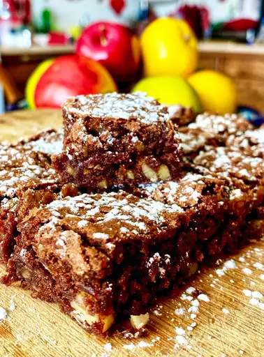

Brownie Recipe

A very quick and easy brownie recipe that should only take 30 minutes.
Made using very basic home ingredients, so it's very easy to bake!.
Ingredients:
- 2 cups white sugar
- 1 1/2 cups all-purpose flour
- 1 cup butter, melted
- 4 eggs
- 1/2 cup cocoa powder
- 1 teaspoon vanilla extract
- 1/2 teaspoon baking powder
- 1/2 teaspoon salt
- 1/2 cup walnut halves
Steps:
- Preheat oven to 350F (175C)
- Grease a 9x13-inch pan
-
Into a large bowl mix sugar, flour, melted butter, eggs, cocoa powder,
vanilla, baking powder, and salt until combined.
- Spread the batter into the prepared pan and decorate with walnut halves
-
Bake until top is dry and edges have started to pull away from the s
ides of the pan, about 20 to 30 minutes
- Cool before slicing